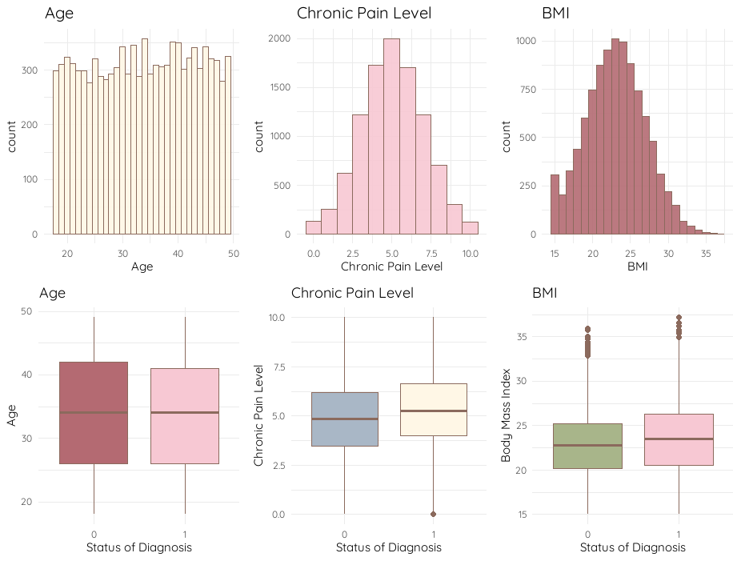
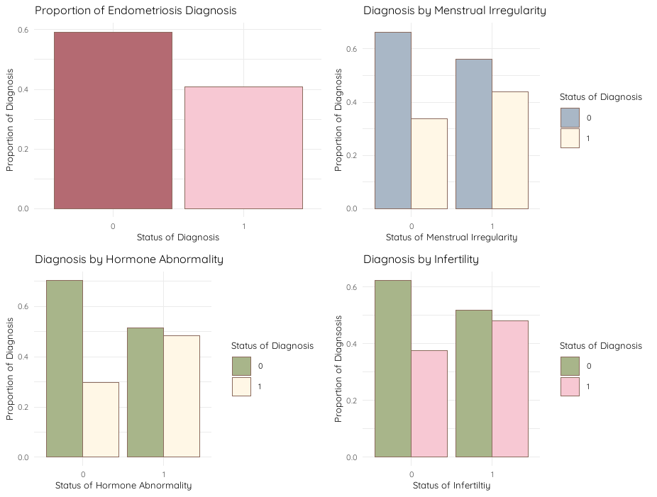
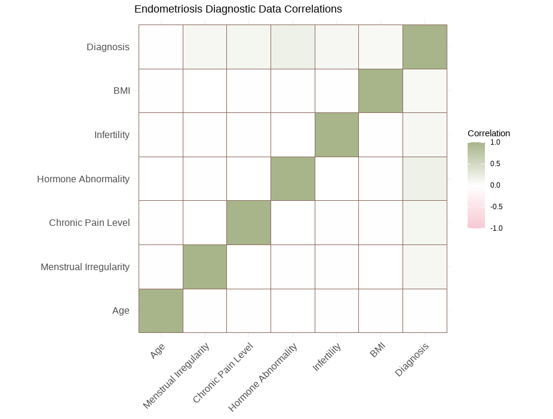
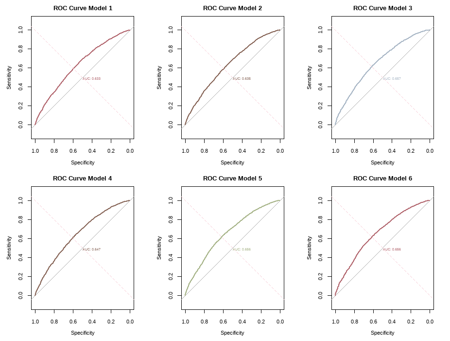
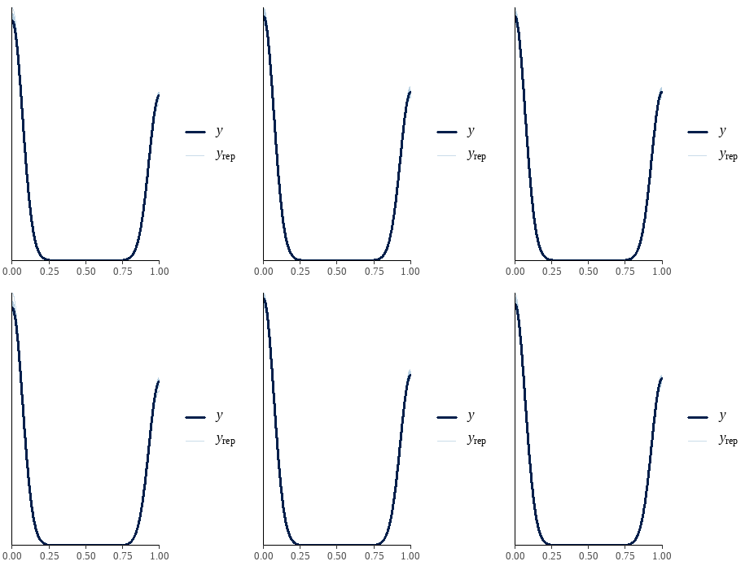
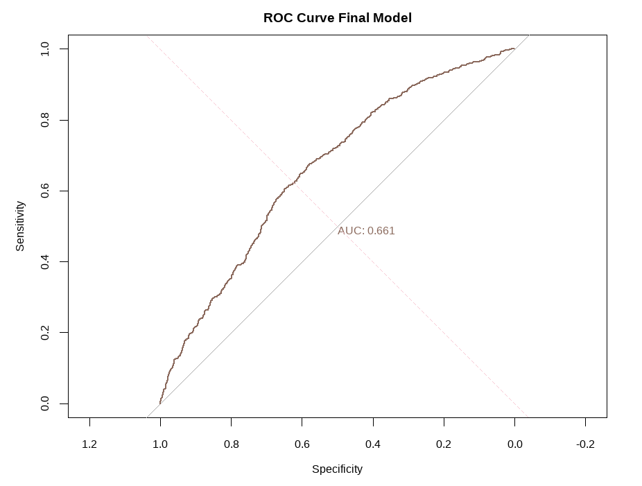

Endometriosis is notoriously difficult to diagnosis. Patients wait an average of seven years to receive a formal diagnosis [1]. In this study, Bayesian logistic regression is applied to synthetic data to develop a predictive model which can aid in early detection of endometriosis. Comparisons are made across six candidate models with informative normal and weakly informative Cauchy priors. The Markov Chain Monte Carlo and Metropolis-Hastings algorithm is applied to these general linear models to predict the odds of possessing this gynecological condition.
KEYWORDS: Endometriosis, Bayesian inference, general linear model, Markov Chain Monte Carlo, Metropolis-Hastings, normal prior, Cauchy prior
Endometriosis is a chronic inflammatory condition, where tissue similar to the uterine lining grows outside of the uterus resulting in inflammation, scarring, and severe pain. It is characterized by a broad spectrum of symptoms, some of which include chronic pain, gastrointestinal issues, fatigue, irregular menstruation, and infertility. This condition has been associated with a reduced quality of life and the delay in its detection prolongs patients' access to necessary treatments for symptom management. As of now, the only definitive way of diagnosing this condition is through a laparoscopy; a minimally invasive surgery [2]. When endometrial lesions are detected, they are generally removed and biopsied to confirm diagnosis. The removal of these lesions are expected to alleviate symptoms. One major drawback of this technique is that when endometriosis is not found, patients are burdened with the vulnerability of recovering from a painful, unwarranted, and costly procedure. Women with presumed diagnoses avoid this procedure out of fear of a similar outcome. These drawbacks highlight several motivations to develop a diagnostic model to infer the probability of endometriosis being present.
Since endometriosis research is widely considered to be under-researched and under-funded, relevant data sets are hard to access. Consequently, this study utilizes synthetic data simulated to resemble a real-life experiment. This Kaggle data set consists of 10,000 observations reflecting common characteristics and symptoms of endometriosis [3]. This study's data is strictly utilized for training purposes and should not be generalized to its respective population.
In this study, six variables are used to predict the binary outcome of whether or not endometriosis is present (0 = No, 1 = Yes). These predictors are highlighted in Table 1.
| Variable | Type | Description |
|---|---|---|
| Age | Discrete | Age of individual (18-50). |
| Menstrual Irregularity | Binary | Indicates whether or not individual's menstrual cycle is irregular (0 = No, 1 = Yes). |
| Chronic Pain Level | Continuous | Self-reported pain severity level (scale from 0-10). |
| Hormone Level Abnormality | Binary | Indicates precense of abnormal hormone levels (0 = No , 1 = Yes). |
| Infertility | Binary | Indicates whether or not an individual experiences infertility (0 = No, 1 = Yes). |
| BMI | Infertility | Body Mass Index (18-40 kilograms per square meter). |



The response variable follows a binomial distribution, yi ~ Bin(ni, μi), where ni is known. We select a logit transformation, log( ui / (1 - ui) ), to link the linear predictors to the mean of the response [4].
We choose the model:
log( π⁄1 - π) = β0 + β1x1 + β2x2 + β3x3 + β4x4 + β5x5 + β6x6, where β0, β1, ..., β6 ~ Normal(0, σ)
The data distribution for y is:
p(y | β) = Πi=1n [ C(ni, yi) · ( eni / (1 + eni) )yi · ( 1 / (1 + eni) )ni - yi ]
Parameterization of the explanatory variables was considered using normal prior distributions, βi ~ N(β, Σβ) for β0, β1, …, β6. In this intuitive approach, prior information can be expressed directly in terms of these parameters [5].
The intercept parameter β0 is selected based on the belief that a “typical” woman aged 18–50 has a 5%–20% chance of having endometriosis. The logit transformation is applied to this range, and the prior mean is defined as the midpoint of the transformed values.
β0 (centered) = [ π⁄1 - π(0.05) + π⁄1 - π(0.20) ] / 2
The prior standard deviation of β0 is set as half the distance between this centered value and the endpoints of the transformed range.
Σβ0 = ( π⁄1 - π(0.05) + π⁄1 - π(0.20) ) / 2 = ( π⁄1 - π(0.20) − π⁄1 - π(0.05) ) / 2
For each proceeding coefficient, we calculate the expected log of odds for each unit increase in the explanatory variable. For instance, we would expect the odds of an endometriosis diagnosis to increase by 25% for each increased level of chronic pain. As a result, the prior mean on β3 is log(1.25) and the standard deviation is the halfway distance between this value and the upper and lower bounds bounds of β3[5]. Table 2 provides the prior mean and standard deviation selected for each coefficient.| Predictors | Prior Mean | Prior Standard Deviation |
|---|---|---|
| Intercept | -2.1653667 | 0.3895362 |
| Age | 0.0476551 | 0.0238275 |
| Menstrual Irregularity | 0.1311821 | 0.0655911 |
| Chronic Pain Level | 0.2027326 | 0.1013663 |
| Hormone Level Abnormaility | 0.2027326 | 0.1013663 |
| Infertility | 0.1311821 | 0.0655911 |
| BMI | 0.0476551 | 0.0238275 |
| Predictors | Lower Bound | Upper Bound |
|---|---|---|
| Intercept | -2.9288435 | -1.4018898 |
| Age | 0.0009540 | 0.0943562 |
| Menstrual Irregularity | 0.0026260 | 0.2597383 |
| Chronic Pain Level | 0.0040583 | 0.4014068 |
| Hormone Level Abnormaility | 0.0040583 | 0.4014068 |
| Infertility | 0.0026260 | 0.2597383 |
| BMI | 0.0009540 | 0.0943562 |
β1, β2, β3, β4, β5, β6 ~ Cauchy(x0 = 0, γ = 2.5)
Alternatively, we apply a weaker prior to the constant term. Since the baseline prevalence of endometriosis is not as high, the scale is increased from 2.5 to 10 [6].β0 ~ Cauchy(x0 = 0, γ = 10)
The joint posterior distribution for the logistic regression model can be expressed as:
p(β, y) ∝ Πi Bin(xi | ni, logit(Xiβ)) · Πi Normal(βi | μi, σi)
when normal priors are selected, and
p(β, y) ∝ Πi Bin(xi | ni, logit(Xiβ)) · Πi Cauchy(βi | xi, γi)
when Cauchy priors are applied.
Since these distributions cannot be obtained directly, MCMC methods are applied to estimate the posterior.
The Metropolis–Hastings algorithm relies on an arbitrary initial value x(0) drawn from a proposal distribution q(x) to initialize the process.
Initialize: x(0) ~ q(x)
For the next iteration, a new candidate value x(cand) is simulated from a proposal distribution q(x(i) | x(i−1)).
Propose: x(i) ~ q(x(i) | x(i−1))
The acceptance probability α determines whether the proposed value becomes the next state. It is computed using the ratio of proposal probabilities:
α = min(1, [ q(x(cand) | x(i−1)) / q(x(i−1) | x(cand)) ])
This process is repeated for iterations i= 1, 2, … until the Markov chains converge to the posterior distribution [7].
Six proposal models are developed to predict the odds of an endometriosis diagnosis given a series of potential symptoms and characteristics. The first four models utilize normal informative prior distributions, where prior parameters are intuitively chosen. The first model includes all input variables and can be expressed as follows:
log(π⁄1 - π)= β0 + β1(Age) + β2(Menstrual Irregularity) + β3(Chronic Pain Level) + β4(Hormone Abnormality) + β5(Infertility) + β6(BMI)
In the fitted models, coefficients for age and BMI are close to zero indicating a low level of significance on the overall model. To further assess their significance, these predictors are transformed in the second model, so that age is scaled to every five years and BMI is analyzed categorically. Table 4 shows the frequency table for the BMI categories.| Var1 | Freq |
|---|---|
| Healthy Weight | 5511 |
| Obese | 418 |
| Overweight | 2793 |
| Underweight | 1278 |
The fitted equation for takes the following form:
log( π⁄1 - π) = β0 + β1(Age/5) + β2(Menstrual Irregularity) + β3(Chronic Pain Level) + β4(Hormone Abnormality) + β5(Infertility) + β6(Obese) + β7(Overweight) + β8(Underweight)
In Models 3 and 4, variables for age and BMI are dropped respectively:log( π⁄1 - π) = β0 + β1(Menstrual Irregularity) + β2(Chronic Pain Level) + β3(Hormone Abnormality) + β4(Infertility) + β5(Obese) + β6(Overweight) + β7(Underweight)
log( π⁄1 - π) = β0 + β1(Menstrual Irregularity) + β2(Chronic Pain Level) + β3(Hormone Abnormality) + β4(Infertility) +
Although these variables are removed to simplify the model and prevent noise, dropping these variables could result in information loss, especially since there is no evidence of collinearity present in the data. This is considered when fitting the two remaining models with Cauchy priors. Since there is significant information in the overweight and obese categories, the BMI variable is kept in Models 5 and 6.log( π⁄1 - π)= β0 + β1(Age) + β2(Menstrual Irregularity) + β3(Chronic Pain Level) + β4(Hormone Abnormality) + β5(Infertility) + β6(BMI)
log(&pi⁄1 - π)= β0 + β1(Menstrual Irregularity) + β2(Chronic Pain Level) + β3(Hormone Abnormality) + β4(Infertility) + β5(BMI)
Table 5 provides the results of fitted Models 1-6. Based on these results, hormone abnormalities and chronic pain level appear to consistently hold the most predictive power across all six models.| Estimate | Model 1 | Model 2 | Model 3 | Model 4 | Model 5 | Model 6 |
|---|---|---|---|---|---|---|
| Intercept | -2.144471 | -1.231417 | -1.832922 | -1.720188 | -0.404786 | -0.404599 |
| Age | -0.001714 | -0.001642 | ommitted | ommitted | -0.039812 | ommitted |
| Menstrual Irregularity | 0.132292 | 0.129262 | 0.335697 | 0.339813 | 0.206866 | 0.207461 |
| Chronic Pain Level | 0.109986 | 0.110095 | 0.125449 | 0.12447 | 0.505207 | 0.506221 |
| Hormone Level Abnormaility | 0.230077 | 0.22889 | 0.610487 | 0.603655 | 0.4406668 | 0.40658 |
| Infertility | 0.131111 | 0.131966 | 0.340058 | 0.339403 | 0.205028 | 0.204763 |
| BMI | 0.043092 | - | - | ommitted | 0.353553 | 0.3542265 |
| Obese | - | 0.067705 | 0.240297 | - | - | - |
| Overweight | - | 0.129528 | 0.348393 | - | - | - |
| Underweight | - | 0.026705 | 0.038178 | - | - | - |

| Model | Balanced Accuracy | Sensitivity | specificity | Kappa |
|---|---|---|---|---|
| Model 1 | 0.5944791 | 0.6312822 | 0.5576761 | 0.1812516 |
| Model 2 | 0.5945416 | 0.6452562 | 0.5438271 | 0.1804540 |
| Model 3 | 0.6132502 | 0.6526109 | 0.5738895 | 0.2173342 |
| Model 4 | 0.6061215 | 0.6496690 | 0.5625739 | 0.2032446 |
| Model 5 | 0.6150781 | 0.6518755 | 0.5782807 | 0.2210765 |
| Model 6 | 0.6156774 | 0.6513851 | 0.5799696 | 0.2223255 |

| Model | LOOIC | ELPD |
|---|---|---|
| Model 3 | 12785.17 | -6392.585 |
| Model 5 | 12780.23 | -6390.113 |
| Model 6 | 12779.38 | -6389.692 |
log( π⁄1 - π)= β0 + β1(Menstrual Irregularity) + β2(Chronic Pain Level) + β3(Hormone Abnormality) + β4(Infertility) + β5(BMI)
β0 ~ Cauchy(x0 = 0, γ = 10)
β1, β2, β3, β4, β5 ~ Cauchy(x0 = 0, γ = 2.5)
| Model | Balanced Accuracy | Sensitivity | Specificity |
|---|---|---|---|
| Model 3 | 0.6108165 | 0.6515880 | 0.5700450 |
| Model 5 | 0.6099075 | 0.6459776 | 0.5738375 |
| Model 6 | 0.6104180 | 0.6466010 | 0.5742350 |

| Metric | Value |
|---|---|
| Accuracy | 0.6255732 |
| Sensitivity | 0.6654321 |
| Specificity | 0.5857143 |
| AUC | 0.6607107 |
| LOOIC | 2554.6130248 |
| ELPD | -1277.3065124 |